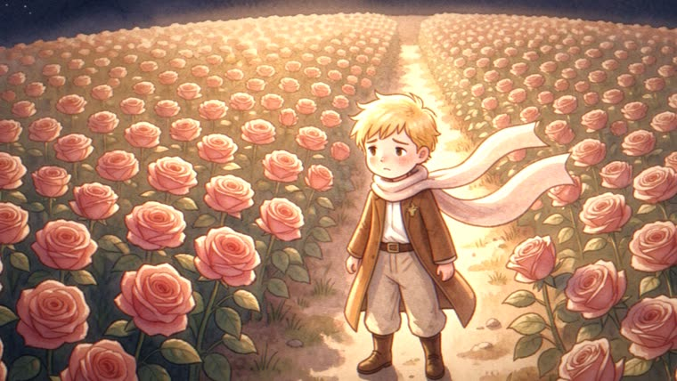

The happy path: you provide the materials and approve the shot list; the skill directs and renders.
1
Prepare the materials
A folder with images (photos and/or illustrations, ideally ≥1920px) and narration — WAVs per clip, a single WAV, or just the text (the skill generates local TTS).
meu-projeto/
├── img/ s1.png s2.png … # the images, in story order
└── audio/ s1.wav s2.wav … # narration by segment (or narracao.txt)
2
Request the film in Claude Code
Point to the folder and use a skill trigger. You can request music and effects too.
"~/meu-projeto — vira filme, impactante, com música e efeitos de som"
3
Approve the shot list
The skill shows the scene · image · beat · movement · transition · duration table before rendering. Adjust anything you want (or say "direct" to skip approval).
The skill’s first real film: 21 watercolors + 22 narration clips became 26 shots with CC0 music (ducking under the voice), desert wind, whooshes, and star shimmer. Full shot list and lessons →
Opening — the film’s only dramatic move: a pull-out reveals the desert. The ending reuses this image and closes the circle.

The rose garden — a pull-out reveals hundreds of roses just like his, along the contemplative valley path.
Roadmap
Project phases
Built through A/B pilots — every grammar rule was validated with an actually rendered film.